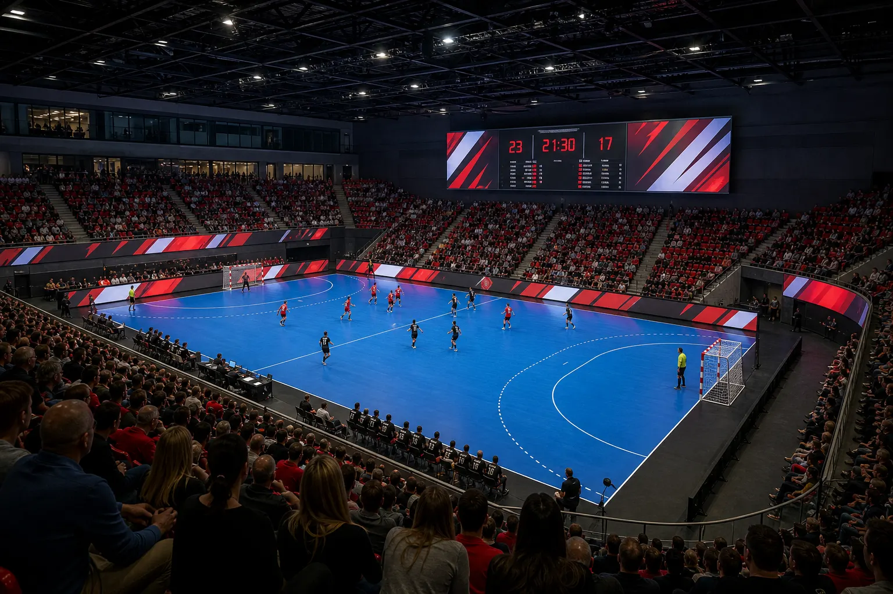
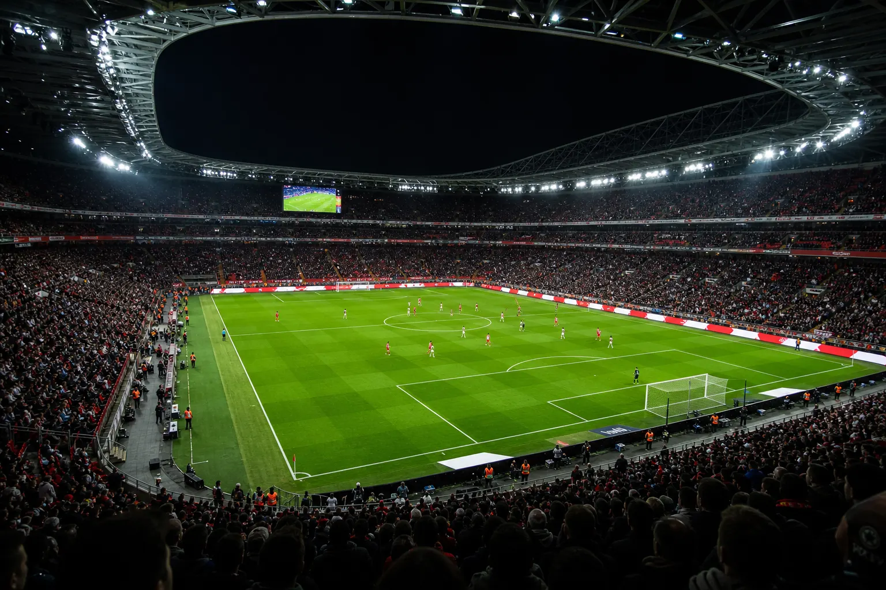
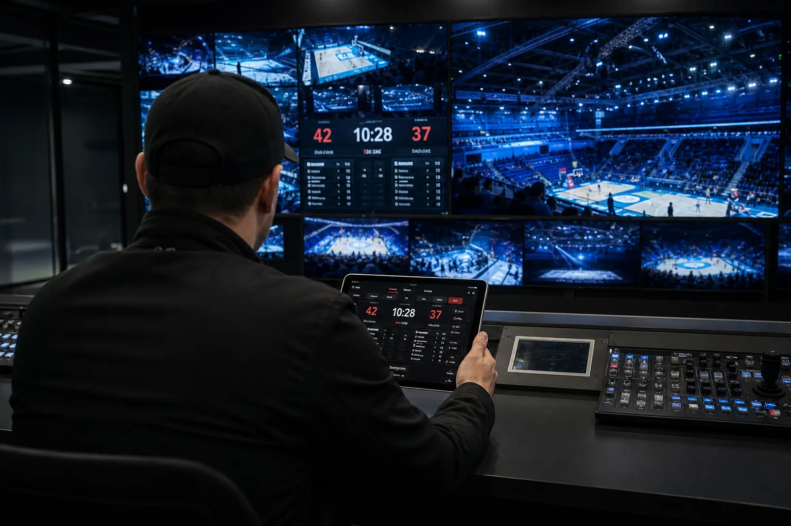

ROUNDS
Fabrikstrasse 7
9200 Gossau
Switzerland
info@rounds.ch
rounds.ch

B-5 / Company
Swiss Precision. Shenzhen Innovation. Connected Communication. Intelligente Lösungen verbinden Content, Daten, Systeme und Menschen im entscheidenden Moment.
B-5.1 / Company

Ein besonderer Moment entsteht durch das Zusammenspiel vieler Elemente. Informationen entstehen, Inhalte werden erstellt, Menschen erwarten Orientierung und Systeme müssen genau im richtigen Moment zusammenarbeiten. Die Herausforderung ist nicht die Menge an Technologie – sondern die Verbindung, die daraus entsteht.
SLAM.SYSTEMS entstand aus der Erkenntnis, dass Technologie alleine noch keine Wirkung erzeugt. Erst wenn Content, Daten, Systeme und Menschen miteinander verbunden werden, entstehen Momente, die Menschen erreichen, Emotionen wecken, Bedeutung schaffen und so langfristig in Erinnerung bleiben.
Die Geschichte begann bereits 1999 mit der Entwicklung von Lösungen für Corporate Communication mit Multimedia. Mit Konzepten wie CorporateTV, CorporateAUDIO und CorporateTXT entstanden nicht einfach neue Kommunikationskanäle. Sie folgten der Idee, Informationen, Inhalte, Werbung und Unterhaltung mit Mitarbeitenden, Kunden, Partnern und Besuchern zu verbinden.
Aus dieser Erfahrung entwickelte sich die heutige SLAM.SYSTEMS Architektur. Sie verbindet Lösungen für Sport, Unternehmen und moderne Kommunikationsräume zu einem intelligenten Gesamtsystem. Die COR FAMILY bildet dabei die technologische Grundlage: Frontend, Control, Runtime und Output arbeiten als abgestimmte Komponenten zusammen.
B-5.2 / Philosophy

Sports Moments: Sport ist die Bühne, auf der Kommunikation im entscheidenden Moment sichtbar wird. SLAM.SYSTEMS verbindet Content, Live-Situationen und Menschen, damit besondere Momente sichtbar, verständlich und erlebbar werden.
Connected Spaces: Moderne Räume werden zunehmend zu Orten der Kommunikation. SLAM.SYSTEMS verbindet digitale Inhalte mit den Menschen, die diese Räume erleben.
Unsere Denkweise verbindet drei Perspektiven: Swiss Precision steht für präzises Engineering, strukturiertes Systemdenken und zuverlässige Lösungen. Intelligent Innovation entsteht durch das Verständnis zukünftiger Anforderungen und die intelligente Verbindung moderner Technologien. Human Connection erinnert daran, dass Technologie Möglichkeiten schafft – Menschen geben ihnen Bedeutung.
Am Ende geht es nicht darum, die komplexeste Lösung zu entwickeln. Es geht darum, die richtige Verbindung zu schaffen.
B-5.3 / Partners
Fabrikstrasse 7
9200 Gossau
Switzerland
info@rounds.ch
rounds.ch
Area B, 5th Floor, 1st Building
SZZT Industrial Park
No. 3 Tongguan Road, Guangming New District
518132 Shenzhen
China
i@watermoon.com
watermoon.com
B-5.4 / Address
Für Projektanfragen und weitere Informationen: i@slam.systems
B-5.5 / Social Media
Connected communication.
Die Social-Media-Kanäle werden in einer späteren Inhaltsphase verbunden.